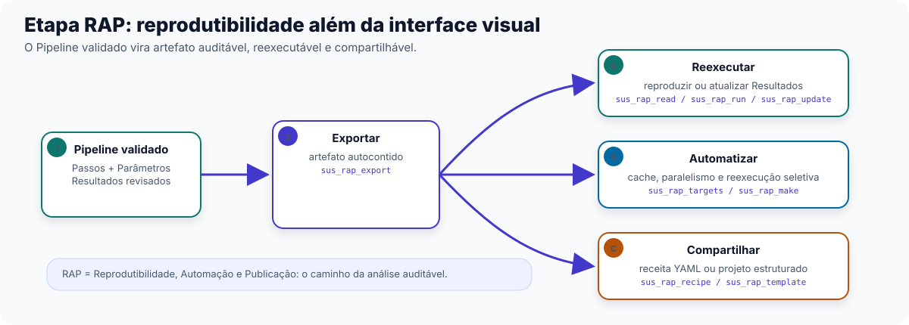
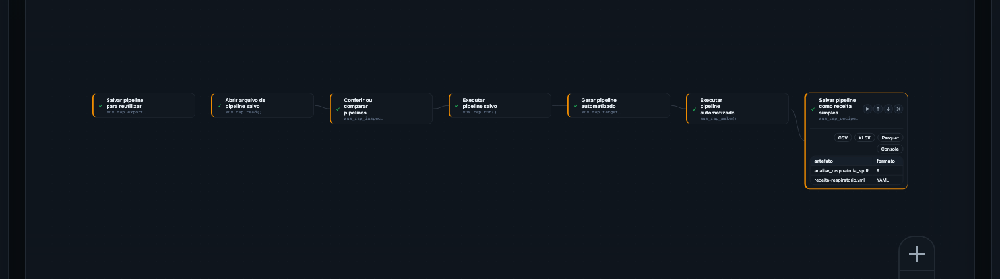

7 Etapa RAP: tirar a análise do Studio sem perder a reprodutibilidade
No Capítulo 4 você chegou a uma fração atribuível — uma estimativa, com modelo e incerteza, da parcela dos óbitos ou internações estudados associada a um fator climático. Esse Resultado ainda vive dentro do Pipeline do Studio. Para virar um relatório técnico entregável, um artigo submetido a uma revista, ou uma rotina executada todo mês sem que ninguém precise reabrir o Studio, falta uma última Etapa: RAP (Reprodutibilidade, Automação, Publicação).
Este capítulo mantém a régua operacional dos Capítulos 2 a 4: público principal é acadêmico e gestor técnico, quem vai efetivamente levar a análise para fora do Studio.
7.1 Por que a RAP vem por último
Um Pipeline montado no Studio é visual e interativo: Nós numa tela, Parâmetros preenchidos no Inspetor. Isso ajuda na exploração e no ajuste da análise, mas não resolve três necessidades frequentes de gestores, pesquisadores e equipes de dados: (1) executar a mesma análise de novo, mês que vem, com dados atualizados, sem reabrir o Studio e reconstruir tudo manualmente; (2) entregar a análise para alguém revisar ou auditar sem exigir que essa pessoa tenha o Studio aberto na tela; (3) publicar a análise (artigo, relatório técnico) de um jeito que outro pesquisador consiga reproduzir o resultado. A Etapa RAP existe para resolver essas três necessidades ao converter o Pipeline validado em um artefato que existe fora da interface visual do Studio.
7.2 As 12 Funções da RAP, em 3 grupos
A Biblioteca reúne 12 Funções na Etapa RAP — a menor das quatro Etapas, mas a única cujo Resultado não é uma tabela, gráfico ou mapa: é o próprio Pipeline, em forma reprodutível.
(a) Exportar, ler, inspecionar e executar — o ciclo básico de tirar um Pipeline do Studio e voltar a rodá-lo.
- Salvar pipeline para reutilizar (
sus_rap_export) — exporta o Pipeline montado no Studio como um artefato reprodutível, um arquivo de código autocontido pronto para reexecução fora do Studio. - Exportar pipeline selecionado (
sus_rap_addin_export) — a mesma exportação, disponível como atalho integrado a um ambiente de desenvolvimento avançado, para quem já trabalha direto com código fora do Studio. - Abrir arquivo de pipeline salvo (
sus_rap_read) — lê um artefato RAP já exportado e recarrega o objeto para inspeção ou reexecução. - Conferir ou comparar pipelines (
sus_rap_inspect) — inspeciona os Passos de um artefato RAP, ou compara dois artefatos (diff) para ver o que mudou entre duas versões da análise. - Atualizar parâmetros do pipeline salvo (
sus_rap_update) — atualiza Parâmetros dentro de um artefato RAP já exportado, sem precisar refazer a exportação do zero. - Executar pipeline salvo (
sus_rap_run) — reexecuta um artefato RAP exportado e reproduz (ou atualiza, se os dados de entrada mudaram) o Resultado original. - Abrir painel visual do pipeline (
sus_rap_gui) — abre uma interface gráfica independente do Studio para editar e rodar artefatos RAP, indicado para quem recebeu o artefato de outra pessoa e não montou o Pipeline original.
(b) Automação com targets — para análises que envolvem muitas etapas, muitos municípios ou muitos anos, e que precisam de cache e reexecução seletiva.
- Gerar pipeline automatizado (
sus_rap_targets) — gera um pipeline_targetsa partir de um artefato RAP. - Executar pipeline automatizado (
sus_rap_make) — executa o pipelinetargetsgerado, com cache automático (só reexecuta o que mudou desde a última vez) e paralelismo.
(c) Compartilhamento e scaffolding — para levar a análise a outra pessoa ou começar um novo projeto do zero, já estruturado.
- Salvar pipeline como receita simples (
sus_rap_recipe) — exporta um artefato RAP como uma receita YAML compacta, mais fácil de revisar e versionar do que o arquivo de código completo. - Importar pipeline salvo (
sus_rap_from_recipe) — importa (e opcionalmente já executa) uma receita YAML recebida de outra pessoa. - Criar novo projeto de análise (
sus_rap_template) — cria a estrutura completa de um novo projeto de Pipeline Analítico Reprodutível, com pastas e arquivos convencionados, para quem começa uma análise do zero fora do Studio.
Se o objetivo é só rodar a mesma análise de novo com dados atualizados, use Abrir arquivo de pipeline salvo (sus_rap_read) e Executar pipeline salvo (sus_rap_run); se algum Parâmetro mudou, aplique antes Atualizar parâmetros do pipeline salvo (sus_rap_update). Se a análise tem muitas etapas custosas (vários municípios, vários anos, vários Modelos), vale investir em Gerar pipeline automatizado (sus_rap_targets) — o cache evita reprocessar o que já rodou antes. Se o objetivo é compartilhar com um colega ou revisor, Salvar pipeline como receita simples (sus_rap_recipe) é mais fácil de revisar que o arquivo de código bruto; se o objetivo é começar um projeto novo já estruturado, Criar novo projeto de análise (sus_rap_template) é o ponto de partida.
7.3 Exercício guiado: do Pipeline validado ao artefato compartilhável
Vamos continuar o arco de mortalidade respiratória pediátrica aberto no recorte “ar” do Capítulo 0 (ec-01-respiratorio-pediatrico), assumindo que os Capítulos 2 a 4 já foram percorridos e o Pipeline chegou a uma fração atribuível validada. Os Modelos de catálogo rap-exportar-executar, rap-targets e rap-compartilhar-scaffold trazem, juntos, o esqueleto completo deste exercício.


Na Etapa RAP, os Parâmetros são menos epidemiológicos e mais operacionais. file_path define onde o artefato será salvo ou lido; Parâmetros de atualização mudam valores dentro de um Pipeline exportado; e as opções ligadas a targets controlam automação, cache e reexecução. Aqui, o cuidado principal é garantir que o arquivo gerado represente o Pipeline validado.
7.3.1 Passo a passo
Exportar — Função Salvar pipeline para reutilizar (
sus_rap_export), que transforma o Pipeline validado (montado nos capítulos anteriores) num artefato reprodutível autocontido — por exemplo, um arquivo chamadoanalise_respiratoria_sp.Reabrir e inspecionar — Função Abrir arquivo de pipeline salvo (
sus_rap_read) compathapontando para o arquivo exportado, seguida de Conferir ou comparar pipelines (sus_rap_inspect) para conferir que todos os Passos foram preservados corretamente.Executar de novo — Função Executar pipeline salvo (
sus_rap_run), que reproduz o Resultado original a partir do artefato — etapa usada para confirmar que o artefato exportado reproduz o que o Studio mostrava.Automatizar, se a análise crescer — quando o mesmo artefato precisar rodar para várias UFs ou vários anos, Gerar pipeline automatizado (
sus_rap_targets) gera um_targetsa partir dele, e Executar pipeline automatizado (sus_rap_make) executa com cache: só recalcula o que mudou.Compartilhar — Função Salvar pipeline como receita simples (
sus_rap_recipe), que gera uma receita YAML compacta do mesmo Pipeline, pronta para ser lida por um colega com Importar pipeline salvo (sus_rap_from_recipe) — ou, para começar um projeto novo do zero com a mesma estrutura, Criar novo projeto de análise (sus_rap_template).
Ao final deste exercício, o recorte de respiratório pediátrico sai do Studio como artefato reprodutível, pronto para relatório técnico, publicação ou reexecução automatizada.
7.4 Fechando o piloto
Com este capítulo, as quatro Etapas do Pipeline — Preparação, Integração, Análise & Modelagem e RAP — foram todas percorridas ao menos uma vez, com um exercício guiado completo em cada uma. O curso completo cobre as 87 Funções do catálogo com mais profundidade e retoma os quatro arcos abertos no Capítulo 0 (respiratório, dengue, cardiovascular, frio) como estudos de caso completos — ver “Próximos capítulos” no início do guia.
1. Por que um Pipeline montado no Studio, sozinho, não é suficiente para publicar um artigo ou entregar um relatório técnico auditável?
Porque ele existe como Nós numa tela interativa; publicação e auditoria exigem um artefato que exista fora da interface visual e que outra pessoa consiga abrir, ler ou reexecutar sem precisar do Studio aberto — é isso que Salvar pipeline para reutilizar (sus_rap_export) produz.
2. Sua análise agora cobre 15 anos de dados e 4 municípios, e está ficando lenta para reexecutar do zero toda vez que você ajusta um detalhe. Qual grupo de Funções da RAP resolve isso?
O grupo de automação com targets: Gerar pipeline automatizado (sus_rap_targets) e Executar pipeline automatizado (sus_rap_make). Ele gera um pipeline com cache, que reexecuta só as partes que mudaram desde a última rodada, em vez de recalcular tudo.
3. Qual a diferença entre exportar um artefato RAP como arquivo de código completo, usando Salvar pipeline para reutilizar (sus_rap_export), e exportar como receita YAML, usando Salvar pipeline como receita simples (sus_rap_recipe)?
Os dois representam o mesmo Pipeline reprodutível; o arquivo de código é o artefato completo e autoexecutável, enquanto a receita YAML é uma versão mais compacta, adequada para compartilhar ou versionar — pode ser reimportada com Importar pipeline salvo (sus_rap_from_recipe).